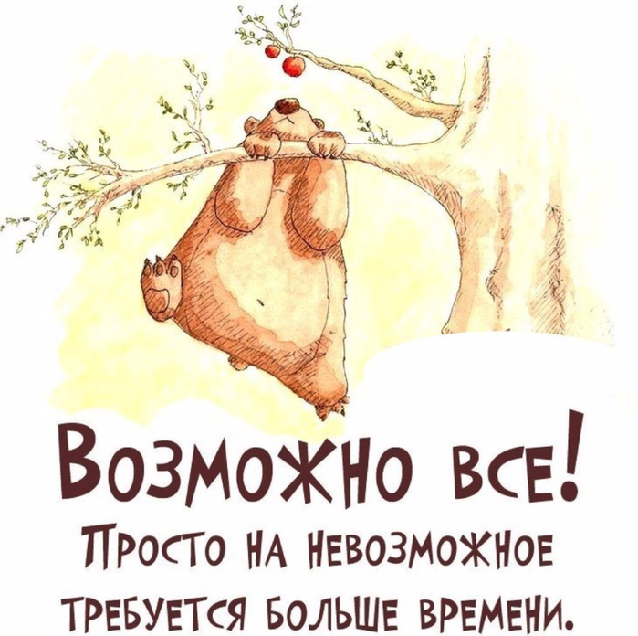
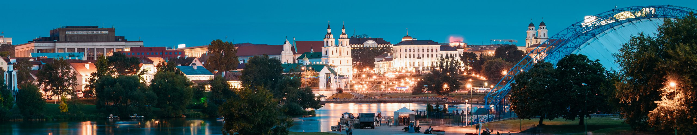
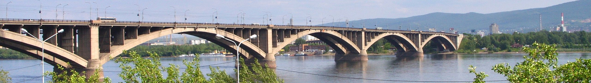

Steve Williams Paucar Mendoza
Доброго времени суток всем читателям моей скромной первой страницы
Мой учитель дал мне
задание найти информацию в любом журнале или книге, но я решил составить список из 6 тем, связанных со
мной. Ниже имеется несколько пунктов, нажатие на которых приведет вас к соответствующей теме.
Я
надеюсь тебе это понравится.
About
Меня зовут Стив Уильямс Паукар Мендоса, как вы, мои читатели, уже наверняка заметили в основном
заголовке.
С самого раннего возраста я всегда мечтал поехать в Россию. Все благодаря тому, что, когда я
был маленьким, мы с мамой смотрели фильм, который называется «Мое имя Клоун», Фильм можно посмотреть онлайн здесь на
YouTube.
Все мои друзья смеялись надо мной, потому что я однажды сказал им, что полечу в Россию, чтобы
учиться и говорить по-русски, но в то время это было почти невозможно, потому что это была другая страна,
другой континент, пересекающий Атлантический океан, другой язык, разные блюда и холодная погода.
Но мои
родители доверяли мне, верили в меня и всегда говорили мне,что все возможно, так как слово «не могу» не
существует и для невозможного потребуется просто немного больше времени.

И после школы очень молодым я начал свое приключение в холодных
странах, потому что это была моя мечта. И моим родителям нужно было гораздо больше любви, чтобы позволить мне
начать свою жизнь, чем оставаться с ними.
Country
Я из Перу, официально Республика Перу, это прекрасная страна,
расположенная на материке Южной
Америки.
С береговой линией он граничит с Тихим океаном, с Эквадором и Колумбией на
севере, с Бразилией на востоке и с Боливией и Чили на юго-востоке. Его территория состоит из разнообразных
ландшафтов: долины, плато и высокие вершины Анд простираются на запад в сторону пустынного побережья и на
восток в сторону Амазонки. Это одна из стран с самым большим биологическим разнообразием и крупнейшими
минеральными ресурсами в мире.
History
Вернемся на тот момент, где я рассказывал, почему решил поехать в Россию. После просмотра фильма я решил, что
хочу выучить русский язык, который является одним из 5 самых сложных языков в мире.
Среди них есть:
- Язык арабский
- Язык китайски
- Язык немецкий
- Язык русский
- Язык японский
И несмотря на то, что моя страна - тропическая страна с прекрасным климатом, свое приключение в Россию я начал очень молодым, когда мне было всего 17 лет. Свой большой жизненный опыт я получал, приехав поочередно в разные страны и города бывшего Советского Союза:
Cities
Ниже я расскажу немного о своей истории, опыте и приключении в каждой стране.
Беларусь - Минск

Минск – это было первое место, где я начал свою первую учебу, и первая страна бывшего Советского Союза, куда я
прилетел.
Я впервые увидел людей со светлыми глазами. Они говорили на таком языке, которого я не знал и
который услышал в первый раз в фильме «Мое имя Клоун». Через 2 месяца после того, как прилетел в Минск, я хотел
уже вернуться домой. Так как мне было тяжело. И вдвойне тяжело от того, что я был совсем один. Тогда я поднял
глаза на небо и сказал Богу: «Дай мне сил и сотвори чудо, чтобы не сдаться». И в этот момент, 25
ноября 2003 года, около 20:00 после разговора с мамой через Windows Live Messenger в Минске пошел снег.
Это был первый снег в моей жизни.
Для меня увидеть снег — это чудо, сотворенное Богом. И когда я увидел,
что снег упал мне на ладонь, я сказал себе: «Бог слышит меня и всегда со мной». Я решил не сдаваться и
двигаться дальше.
Так началась моя жизнь в холодных странах, но с теплом в душе, зная, что Бог
всегда со мной.
УУ меня появилось много знакомых людей, вместе мы ходили на различные вечеринки. Тогда же начал работать. Но я
чувствовал, что чего-то не хватает, и я не знал что, Позже Бог приготовил для меня другой путь – я переехал в
Украину - Киев.
Украина - Киев

Бог послал меня в Украину, чтобы помочь родной сестре, поддержать ее, так как у нее родился сыночек, мой
племянник Хоакинчик.
Я считал его моим сыном, поскольку со мной он начал разговаривать и
впервые ходить.
Сначала это было сложно, я не был готов стать отцом так резко.
К тому же мне нужно было учиться, работать
и помогать моей сестре растить нашего Хоакинчика.
У меня, как и у всех, есть недостатки.
Но мои родители всегда говорили, что сначала Бог, потом семья, а
потом работа. И моя семья научила меня, что для своей семьи надо бороться каждый день, чтобы дать им все.
Позже сестра закончила учебу и вернулась в Перу с моим племянником Хоакинчиком.
Я снова остался один, мне нужно было закончить учебу.
Это было очень сложно, но мой друг Николай всегда
поддерживал меня.
И у Бога был еще один сюрприз с огромным подарком для меня.
Именно в Украине я встретил свою
будущую жену.
Россия - Красноярск

Красноярск – это тот прекрасный город, который подарил мне самое драгоценное, что может получить любой
человек.
Это семья – жена и прекрасная дочь, которую она мне подарила
Познакомились с женой мы в Украине. Сама она родом с Красноярска, и я не знал где находится этот город.
Из-за схожести в названии для меня, я сначала думал, что это город Краснодар. И подумал, что не так уж и
сложно туда переехать. Но мне было все равно куда ехать. Теперь было главным всегда находиться рядом со своей
семьей, и я говорил себе, что готов поехать хоть в Сибирь.
И так все и вышло. Я приехал в Красноярск.
Так началась моя семейная жизнь. Но я многое не замечал, и не мог дать своей семье все, что было
необходимо.
В настоящее время они находятся далеко от меня уже три года.
Именно поэтому решил поступить на это
обучение по созданию сайтов, чтобы мог заработать больше денег и встретиться снова со своей семьей.
Contacts
Вы можете меня найти в следующих социальных сетях: